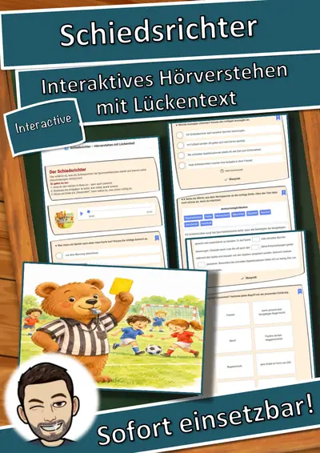
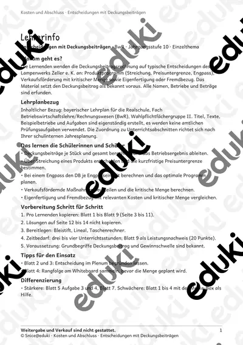
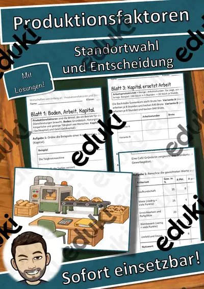

Lesespur: Der Schiedsrichter: Regeln und Entscheidungen – Lesespurgeschichte mit Rätseln (Klasse 6)
Der Schiedsrichter – Regeln und Entscheidungen – Lesespurgeschichte Sport (Klasse 6)Begib dich mit deiner Klasse auf eine spannende Lesespur durch die Mehrzweckhalle! Annika und Moritz besuchen einen Schiri-Workshop – und Moritz ist sicher, dass Schiedsrichter immer gegen seine Mannschaft pfeifen. Im Schiedsrichterraum lernen sie, was Neutralität bedeutet, am Pfeifenregal, was die verschiedenen Pfiffe sagen, an der Handzeichentafel die wichtigsten Armzeichen. Am Kartenständer geht es um Gelb, Gelb-Rot und Rot, am Zweikampffeld um die Frage „Foul oder fair?“, am Basketballfeld um den Schrittfehler. An der Seitenlinie zeigt eine Linienrichterin, warum Schiris im Team arbeiten, an der Mannschaftsbank, wie man respektvoll nachfragt, an der Videowand, dass auch Profis Fehler machen – und in der Spielfeldmitte leitet Annika zum Schluss selbst ein Spiel. Ihr Maskottchen, die kleine Trillerpfeife Pfeifchen, ist immer dabei. Am Ende jedes Abschnitts verrät ein Hinweis den nächsten Ort auf dem Plan – nur wer genau liest, findet den Weg und sammelt alle geheimen Buchstaben zum Lösungswort.
Die perfekte Lesespur für den SPORTUNTERRICHT der 6. Klasse – ideal für Regelkunde, Fairplay-Erziehung und als Vorbereitung darauf, selbst Spiele zu leiten. Das Material ist SOFORT EINSETZBAR und in DREI DIFFERENZIERUNGSSTUFEN (leicht ★ / mittel ★★ / schwer ★★★) angelegt.WICHTIG: Das komplette Material ist sowohl in FARBE als auch in SCHWARZ-WEISS enthalten – ideal zum Sparen von Druckkosten.DAS IST ENTHALTEN
- Lesespurgeschichte in 3 Niveaus (leicht, mittel, schwer)
- farbiger Hallenplan als Suchkarte
- Hörverstehen mit QR-Code zur MP3 (selbstständiges Hören mit Kopfhörern)
- vier Aufträge auf dem Weg: eine Zuordnung, ein Quiz, eine Rechenaufgabe und ein Steckbrief
- Rätselseite (Wörter-Suchsel + Fragen)
- Ausmalbild zum Thema (Schiedsrichterin mit Karte)
- ausführliches Lösungsblatt für die Lehrkraft
- alles zusätzlich als komplette Schwarz-Weiß-VarianteSO GEHT DIE LESESPURDie Kinder lesen ab START, finden im Text den nächsten Ort, suchen ihn auf dem Plan und lesen bei dieser Station weiter. An jeder richtigen Station gibt es einen Buchstaben. Eingebaute Sackgassen (Getränkestand, Pokalvitrine, Kraftraum, Umkleide) sind keine Stationen und dienen der Selbstkontrolle. Am Ende werden die gesammelten Buchstaben umgestellt und ergeben ein geheimes Lösungswort. (Die Lösungen sind selbstverständlich nur im Lösungsblatt für die Lehrkraft enthalten.)INHALTLICHER SCHWERPUNKTDie Kinder lernen die Aufgaben und die Neutralität der Spielleitung kennen, deuten Pfiffe, Handzeichen und Karten, unterscheiden Foul und fairen Zweikampf und lernen, Entscheidungen zu respektieren – auch wenn sie wehtun.ABGEDECKTER LEHRPLAN (Klasse 6, Sport)
- Sport (LehrplanPLUS Bayern) – Jahrgangsstufe 6 „Fairness, Kooperation, Konkurrenz“ / „Spielen und Spiel“: Regeln verstehen und einhalten, Aufgaben der Spielleitung kennen, Entscheidungen respektieren, einfache Spiele selbst leiten.
- Deutsch – Lesen: Sachtexten gezielt Informationen entnehmen; Zuhören: einem Sachhörtext folgen (Hörverstehen mit MP3).
- Mathematik – Addition, Multiplikation und Subtraktion, Terme.
- Fächerübergreifend / Kompetenzen: Werteerziehung (Respekt, Fairness, Umgang mit Fehlern), Konfliktlösung, genaues Lesen und Prüfen, kreatives Gestalten (Ausmalbild).
Geeignet für Freiarbeit, Stationenlernen, Vertretungsstunden, Wochenplan, Projekttage und Distanzunterricht. Klassenstufe 6.
Ähnliche Materialien

Schiedsrichter – Hörverstehen mit Lückentext (interaktiv)

Schiedsrichter Lückentext mit Wortspeicher Hörverstehen und Suchsel

Lesespur: Fair spielen: gewinnen und verlieren lernen – Lesespurgeschichte mit Rätseln (Klasse 1)

Neutralität Lückentext mit Wortspeicher Hörverstehen und Suchsel

Max und Moritz Lückentext mit Wortspeicher Hörverstehen und Suchsel

Lesespur: Organspende: eine Entscheidung fürs Leben – Lesespurgeschichte mit Rätseln (Klasse 7)

Deckungsbeitrag: Entscheidungen im Unternehmen – Arbeitsheft mit Lösungen (BwR 10, Realschule)
